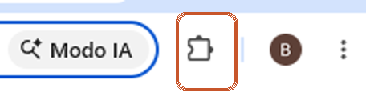
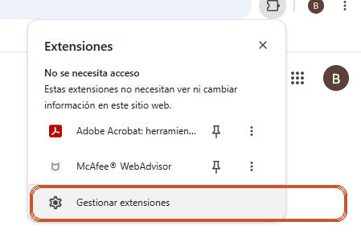
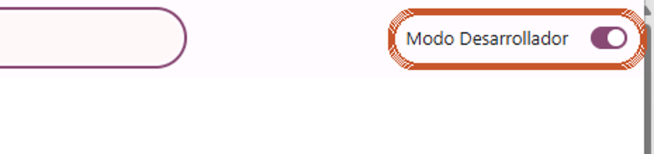
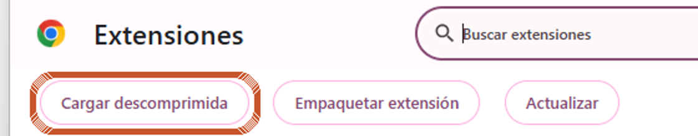
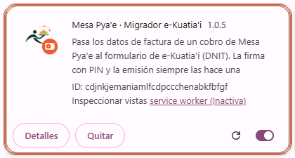

Factura en e-Kuatia'i: instalar en la computadora de la caja
Se hace una sola vez, en la computadora donde se cobra, con Google Chrome. Son 5 pasos y lleva unos 3 minutos.
Descargá la extensión
⬇ Descargar extensión e-Kuatia'iSe guarda en la carpeta Descargas con el nombre migrador-ekuatiai.zip.
Descomprimí el archivo
En la carpeta Descargas, hacé clic derecho sobre migrador-ekuatiai.zip → "Extraer todo…" → "Extraer".
En Mac: doble clic sobre el archivo y se descomprime solo.
Abrí las extensiones de Chrome y activá el "Modo Desarrollador"
Arriba a la derecha de Chrome, tocá el ícono de Extensiones (la pieza de rompecabezas 🧩) y después "Gestionar extensiones".


Otra forma: copiá esta dirección, pegala en la barra de Chrome y apretá Enter:
chrome://extensions
Arriba a la derecha, encendé "Modo Desarrollador".

Si ya tenían una extensión "Mesa Pya'e · Migrador e-Kuatia'i" instalada, tocá "Quitar" en esa tarjeta antes de seguir.
Tocá "Cargar descomprimida" y elegí la carpeta
Tocá "Cargar descomprimida", buscá en Descargas la carpeta que extrajiste y entrá hasta la carpeta migrador-ekuatiai (la que tiene adentro el archivo manifest.json). Tocá "Seleccionar carpeta".

No borres esa carpeta después: Chrome la usa. Si querés, movela antes a Documentos y cargala desde ahí.
Listo: comprobá que quedó instalada
Tiene que aparecer la tarjeta "Mesa Pya'e · Migrador e-Kuatia'i" con el interruptor encendido.

Volvé a la caja de Mesa Pya'e y recargá la página (tecla F5).
Cómo se usa todos los días
- Cobrá normalmente y elegí Factura (RUC o CI y razón social).
- En Caja → Turno y cierre, ese cobro muestra el botón 🧾 e-Kuatia'i. Tocalo.
- Se abre el portal e-Kuatia'i de la DNIT con la factura ya completada. Iniciá sesión si te lo pide, revisá, ingresá tu PIN y emití.
La extensión nunca escribe tu PIN ni emite sola, y no envía datos a ningún servidor. Política de privacidad.
¿No aparece el botón 🧾?
- Revisá que estás en Google Chrome y en el mismo perfil donde la instalaste.
- Recargá la caja con F5.
- El botón solo aparece en cobros hechos con Factura.
- Si sigue sin aparecer, escribinos y te ayudamos.
Mesa Pya'e · by Ser o Límites